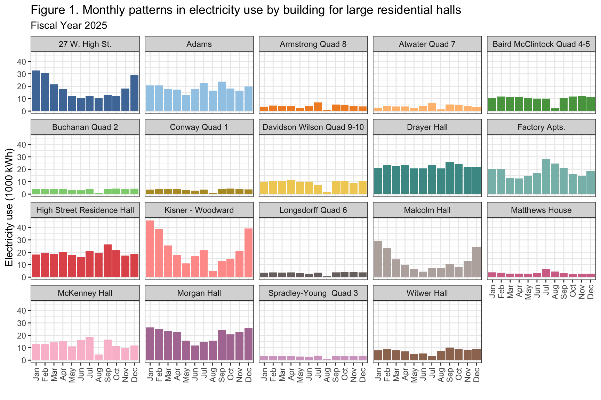
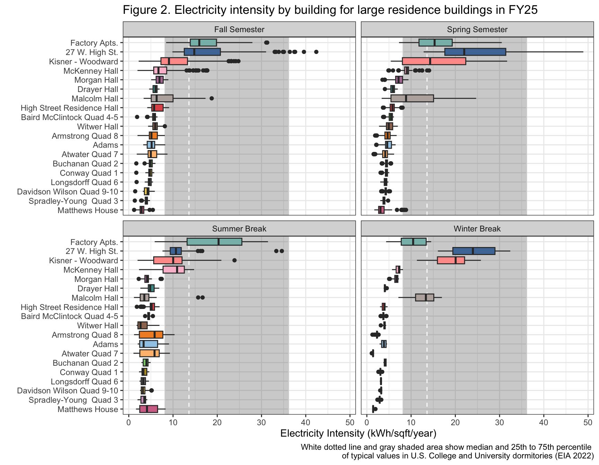

Last updated: 2026-03-31
Checks: 6 1
Knit directory: dickinson_power/
This reproducible R Markdown analysis was created with workflowr (version 1.7.2). The Checks tab describes the reproducibility checks that were applied when the results were created. The Past versions tab lists the development history.
The R Markdown file has unstaged changes. To know which version of
the R Markdown file created these results, you’ll want to first commit
it to the Git repo. If you’re still working on the analysis, you can
ignore this warning. When you’re finished, you can run
wflow_publish to commit the R Markdown file and build the
HTML.
Great job! The global environment was empty. Objects defined in the global environment can affect the analysis in your R Markdown file in unknown ways. For reproduciblity it’s best to always run the code in an empty environment.
The command set.seed(20260107) was run prior to running
the code in the R Markdown file. Setting a seed ensures that any results
that rely on randomness, e.g. subsampling or permutations, are
reproducible.
Great job! Recording the operating system, R version, and package versions is critical for reproducibility.
Nice! There were no cached chunks for this analysis, so you can be confident that you successfully produced the results during this run.
Great job! Using relative paths to the files within your workflowr project makes it easier to run your code on other machines.
Great! You are using Git for version control. Tracking code development and connecting the code version to the results is critical for reproducibility.
The results in this page were generated with repository version 4edaaa1. See the Past versions tab to see a history of the changes made to the R Markdown and HTML files.
Note that you need to be careful to ensure that all relevant files for
the analysis have been committed to Git prior to generating the results
(you can use wflow_publish or
wflow_git_commit). workflowr only checks the R Markdown
file, but you know if there are other scripts or data files that it
depends on. Below is the status of the Git repository when the results
were generated:
Ignored files:
Ignored: .DS_Store
Ignored: .Rhistory
Ignored: .Rproj.user/
Ignored: analysis/.DS_Store
Ignored: analysis/.Rhistory
Ignored: analysis_to-fix/.DS_Store
Ignored: data/.DS_Store
Ignored: data/FY25 Main Meter Data.xlsx
Ignored: data/building_list_FY25_updated.xlsx
Ignored: data/graph_data_life_exp.csv
Ignored: data/housing_counts.csv
Ignored: keys/.DS_Store
Ignored: output/annual_kwh.csv
Ignored: output/building_check.csv
Ignored: output/building_check.xlsx
Ignored: output/daily_kwh.csv
Ignored: output/kwh_academic_2026-03-16.csv
Ignored: output/kwh_academic_2026-03-17.csv
Ignored: output/kwh_academic_2026-03-18.csv
Ignored: output/kwh_academic_2026-03-22.csv
Ignored: output/kwh_academic_2026-03-23.csv
Ignored: output/kwh_academic_2026-03-25.csv
Ignored: output/kwh_academic_2026-03-30.csv
Ignored: output/kwh_annual.csv
Ignored: output/kwh_annual_2026-03-04.csv
Ignored: output/kwh_annual_2026-03-12.csv
Ignored: output/kwh_annual_2026-03-16.csv
Ignored: output/kwh_annual_2026-03-17.csv
Ignored: output/kwh_annual_2026-03-18.csv
Ignored: output/kwh_annual_2026-03-22.csv
Ignored: output/kwh_annual_2026-03-23.csv
Ignored: output/kwh_annual_2026-03-25.csv
Ignored: output/kwh_annual_2026-03-30.csv
Ignored: output/kwh_annual_20260225.csv
Ignored: output/kwh_annual_20260226.csv
Ignored: output/kwh_daily.csv
Ignored: output/kwh_daily_2026-03-04.csv
Ignored: output/kwh_daily_2026-03-12.csv
Ignored: output/kwh_daily_2026-03-16.csv
Ignored: output/kwh_daily_2026-03-17.csv
Ignored: output/kwh_daily_2026-03-18.csv
Ignored: output/kwh_daily_2026-03-22.csv
Ignored: output/kwh_daily_2026-03-23.csv
Ignored: output/kwh_daily_2026-03-25.csv
Ignored: output/kwh_daily_2026-03-30.csv
Ignored: output/kwh_daily_20260225.csv
Ignored: output/kwh_daily_20260226.csv
Ignored: output/kwh_main_annual.csv
Ignored: output/kwh_main_daily.csv
Unstaged changes:
Modified: analysis/Report_I_Residential-L.Rmd
Note that any generated files, e.g. HTML, png, CSS, etc., are not included in this status report because it is ok for generated content to have uncommitted changes.
These are the previous versions of the repository in which changes were
made to the R Markdown
(analysis/Report_I_Residential-L.Rmd) and HTML
(docs/Report_I_Residential-L.html) files. If you’ve
configured a remote Git repository (see ?wflow_git_remote),
click on the hyperlinks in the table below to view the files as they
were in that past version.
| File | Version | Author | Date | Message |
|---|---|---|---|---|
| html | 4edaaa1 | maggiedouglas | 2026-03-30 | Build site. |
| Rmd | 7140aff | maggiedouglas | 2026-03-30 | attempt to update website to integrate new student results |
| html | 7140aff | maggiedouglas | 2026-03-30 | attempt to update website to integrate new student results |
| Rmd | 10db689 | maggiedouglas | 2026-03-30 | change navigation bar and add student report sections |
This report examines the category of large residential halls across the Dickinson College campus. This category encompasses all student residential halls with a total square footage greater than 10,000. There are 21 total buildings within this category with 9 on individual meters, 10 on submeters, and 2 on the main meter without disaggregated data. The analyses in this report will cover the 19 buildings of which there is individual electricity usage data.
Residences range in size from 10,724 sqft to 48,720 sqft with a total of building space of 417,027 sqft. Together, this building category makes up 21.9% of the total campus building space. Spaces range from the traditional dormitory style rooms with shared common spaces such as bathrooms, study areas, and kitchens to apartments with private amenities. Annual electricity usage ranges from 269,770 kWh to 36,395 kWh which may be due to the variability in building size, style, and HVAC systems. Overall, this report will show differences in electricity usage and intensity during fiscal year 2025 and academic year 2024-2025.
datatable(annual_lg_res,
rownames = FALSE,
colnames = c("Meter","Building", "Days of data (%)", "Square\nfootage",
"kWh", "kWh (corrected)", "kWh per\nsqft", "Cost ($)", "CO2e\n(MT)"),
filter = "none",
class = "compact",
options = list(pageLength = 10, autoWidth = TRUE, dom = 'p'),
caption = "Table 1. Total electricity use, esimated financial cost, and estimated
greenhouse gas emissions of large residence buildings during fiscal year 2025.")Table 1 shows the electricity use during fiscal year 2025. The median electricity use is approximately 135,000 kWh, demonstrating a ‘typical’ building in this category. This is equivalent to about 40 metric tons of carbon emissions and about $10,000 per year. Kisner-Woodward has the most total electricity use and Spradley-Young has the least. 27 W. High Street has the most electricity use per square foot and Matthews House has the least. Kisner-Woodward and 27 W. High Street stand out because they do not have anywhere near the largest square footage in the category, but they have the highest usage and intensity, respectively.
datatable(academic_lg_res,
rownames = FALSE,
colnames = c("Meter", "Building", "Days of data (%)", "Square footage",
"Occupants (AY)", "kWh", "kWh (corrected)", "kWh per sqft",
"kWh per person", "Cost ($)", "CO2e (MT)"),
filter = "none",
class = "compact",
options = list(pageLength = 10, autoWidth = TRUE, dom = 'p'),
caption = "Table 2. Total electricity use, estimated financial cost, and estimated
greenhouse gas emissions of large residence buildings during academic year 2024/2025.")Table 2 shows the electricity use during the 2024-2025 academic year. The median electricity use is approximately 95,000 kWh, demonstrating a ‘typical’ building during the academic year. This is equivalent to about 29 metric tons of carbon emissions and $8,000 per year. Kisner-Woodward has the most total electricity use and Matthews House has the least. 27 W. High Street has the most electricity use per square foot and Matthews House has the least. 27 W. High Street has the most electricity use per person and Spradley-Young has the least. Again, Kisner-Woodward and 27 W. High Street have high usage in total, per square foot, and per person despite not being the largest or most heavily occupied buildings.
ggplot(daily_lg_res, aes(x= month, y= kwh/(10^3), fill = NAME)) +
geom_col(position = "stack") +
facet_wrap(. ~ NAME) +
scale_fill_paletteer_d("ggthemes::Tableau_20")+
theme_bw() +
theme(axis.text.x = element_text(angle = 90, vjust = 0.5, hjust = 1)) +
theme(legend.position = "none") +
labs(x = "",
y = "Electricity use (1000 kWh)",
title = "Figure 1. Monthly patterns in electricity use by building for large residential halls",
subtitle = "Fiscal Year 2025")Warning: Removed 290 rows containing missing values or values outside the scale range
(`geom_col()`).
| Version | Author | Date |
|---|---|---|
| 7140aff | maggiedouglas | 2026-03-30 |
Figure 1 shows the monthly patterns in electricity use during fiscal year 2025. Some buildings, such as Kisner-Woodward and 27 W. High Street, have a distinct u-shape, indicating higher use during winter months, and lower use during the summer months. The buildings with this shape also tend to have the highest electricity usage. However, the majority of buildings have a flat shape, showing that electricity use did not differ much during any point of the year. It is also notable that more than half of the buildings have a dip during either July or August where there is very little electricity use.
ggplot(daily_lg_res, aes(fct_reorder(NAME, kwh_sqft, median), y = kwh_sqft,
fill = NAME)) +
annotate("rect", xmin=-Inf, xmax=Inf, ymin=8.2, ymax=36.1,
color="lightgrey", alpha= 0.3) +
geom_hline(yintercept=13.6, linetype="dashed", color="white") +
geom_boxplot() +
facet_wrap(. ~ period) +
# ylim(0,50) +
theme_bw() +
theme(legend.position = "none") +
scale_fill_paletteer_d("ggthemes::Tableau_20") +
labs(x = "",
y = "Electricity Intensity (kWh/sqft/year)",
title = "Figure 2. Electricity intensity by building for large residence buildings in FY25.") +
coord_flip()Warning: `fct_reorder()` removing 290 missing values.
ℹ Use `.na_rm = TRUE` to silence this message.
ℹ Use `.na_rm = FALSE` to preserve NAs.Warning: Removed 290 rows containing non-finite outside the scale range
(`stat_boxplot()`).
| Version | Author | Date |
|---|---|---|
| 7140aff | maggiedouglas | 2026-03-30 |
Figure 2 shows the electricity intensity by building for fiscal year 2025, and is faceted into different sections by seasons: Fall, Spring, Summer, and Winter. Winter break has the lowest variability in electricity intensity, demonstrated by the boxplots with very small ranges. Spring semester has the highest overall electricity intensity, followed closely by fall semester. Factory Apartments, 27 W. High Street, and Kisner-Woodward consistently have the highest electricity intensity across seasons. Malcolm Hall also has notably high electricity intensity in the fall, spring, and winter. Additionally, buildings that appear to usually have low variability in electricity intensity have increased variability over summer break. This can be seen in Armstrong, Adams, Atwater, and Matthews House.
Overall, the electricity intensity of the majority of our buildings is lower than the range of typical U.S dormitory, fraternity, or sorority buildings (EIA, 2022). However, buildings like Factory Apartments and 27 W. High Street regularly have a median above the median of these typical buildings.
The recommendations for our category are driven by their specific usage patterns. They are very different for each building because there are unique cases that need to be individually considered.
Dickinson’s electricity intensity is generally below that of the typical U.S. dormitory, fraternity, and sorority, as compared to the EIA building report (2022). There are some buildings that are notable outliers that are within the range: Factory Apartments, 27 W. High Street, Kisner-Woodward, and Malcolm Hall. Improving these buildings would be the best way to reduce overall use because they would be considered “low-hanging fruit”. 27 W. High Street is the oldest building in the category, built in 1905, and it also has the highest electricity intensity annually at 18.8 kWh per square foot. It is unclear when Factory Apartments were constructed or renovated, but since they also have high electricity intensity, this would be important to know to see if renovations improve electricity efficiency.
Additionally, more than half of the buildings have a dip in total electricity usage in July or August. This pattern was unexpected and needs to be further investigated considering that student move-in occurs in August and temperatures are high. It would be expected that electricity usage would increase during this period, so it is unclear why this pattern is occurring.
Considering the high electricity use per square footage of 27 W. High Street, Factory Apartments, and Kisner-Woodward, Dickinson should investigate ways to improve electricity efficiency in these buildings. On the other hand, Drayer Hall and High Street Residence Hall use 5.5 and 5.6 kWh/sqft, respectively, serving as helpful models of what electricity efficiency can look like in these large residential halls.
This analysis also revealed a u-shaped curve of electricity use over the year in 27 W. High St., Kisner-Woodward, and Malcom Hall. This intense reaction to low outdoor temperatures increases the total cost burden on the school and illustrates the potential for improved electricity efficiency in these buildings. We recommend that heating systems be further improved because it is clear that these buildings are outliers with high costs.
Finally, the electricity use data for Goodyear Apartments is missing from this analysis because it is combined with that of the Goodyear Art Studio as they share the same meter. To improve understanding of electricity use in large residential halls and academic buildings it is important for Dickinson to submeter these two sections of the same building. Furthermore, having disaggregated data would allow for a better understanding of electricity use and potential areas for improvement in older buildings as it was constructed in 1891 and last renovated in 2000.
Overall, our recommendations mainly pertain to further investigation of unusual patterns and individual buildings with the highest electricity usage and intensity.
Energy Information Administration (EIA). (2022). 2018 Commerical Buildings Energy Consumption Survey (CBECS). https://www.eia.gov/consumption/commercial/
Leary, N. (2025). Dickinson College Greenhouse Gas Inventory 2008-2023. Center for Sustainability Education.
Liv:
Claire:
sessionInfo()R version 4.5.2 (2025-10-31)
Platform: x86_64-apple-darwin20
Running under: macOS Ventura 13.7.8
Matrix products: default
BLAS: /Library/Frameworks/R.framework/Versions/4.5-x86_64/Resources/lib/libRblas.0.dylib
LAPACK: /Library/Frameworks/R.framework/Versions/4.5-x86_64/Resources/lib/libRlapack.dylib; LAPACK version 3.12.1
locale:
[1] en_US.UTF-8/en_US.UTF-8/en_US.UTF-8/C/en_US.UTF-8/en_US.UTF-8
time zone: America/New_York
tzcode source: internal
attached base packages:
[1] stats graphics grDevices utils datasets methods base
other attached packages:
[1] paletteer_1.7.0 DT_0.34.0 lubridate_1.9.5 forcats_1.0.1
[5] stringr_1.6.0 dplyr_1.2.0 purrr_1.2.1 readr_2.2.0
[9] tidyr_1.3.2 tibble_3.3.1 ggplot2_4.0.2 tidyverse_2.0.0
loaded via a namespace (and not attached):
[1] sass_0.4.10 generics_0.1.4 prismatic_1.1.2 stringi_1.8.7
[5] hms_1.1.4 digest_0.6.39 magrittr_2.0.4 timechange_0.4.0
[9] evaluate_1.0.5 grid_4.5.2 RColorBrewer_1.1-3 fastmap_1.2.0
[13] rprojroot_2.1.1 workflowr_1.7.2 jsonlite_2.0.0 whisker_0.4.1
[17] rematch2_2.1.2 promises_1.5.0 crosstalk_1.2.2 scales_1.4.0
[21] jquerylib_0.1.4 cli_3.6.5 rlang_1.1.7 withr_3.0.2
[25] cachem_1.1.0 yaml_2.3.12 otel_0.2.0 tools_4.5.2
[29] tzdb_0.5.0 httpuv_1.6.16 vctrs_0.7.1 R6_2.6.1
[33] lifecycle_1.0.5 git2r_0.36.2 htmlwidgets_1.6.4 fs_1.6.7
[37] pkgconfig_2.0.3 pillar_1.11.1 bslib_0.10.0 later_1.4.8
[41] gtable_0.3.6 glue_1.8.0 Rcpp_1.1.1 xfun_0.56
[45] tidyselect_1.2.1 rstudioapi_0.18.0 knitr_1.51 farver_2.1.2
[49] htmltools_0.5.9 labeling_0.4.3 rmarkdown_2.30 compiler_4.5.2
[53] S7_0.2.1